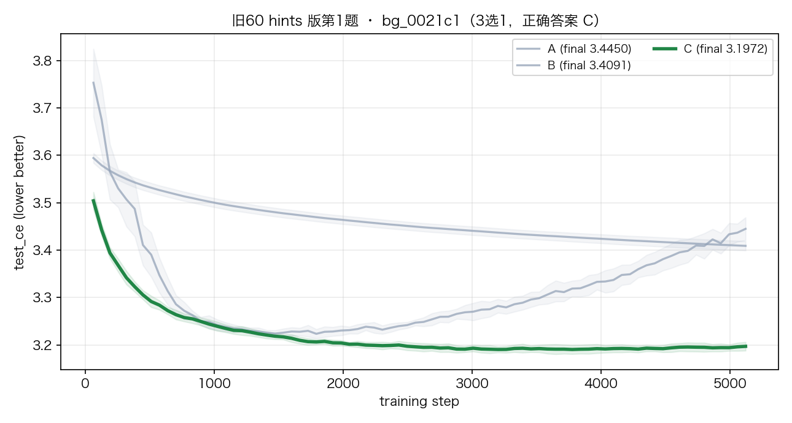
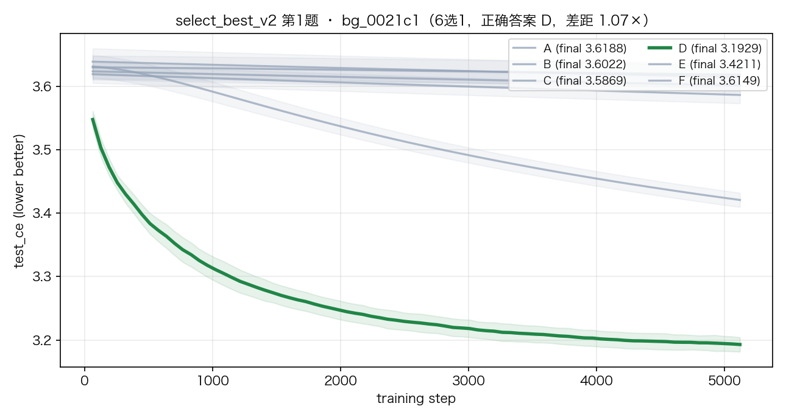
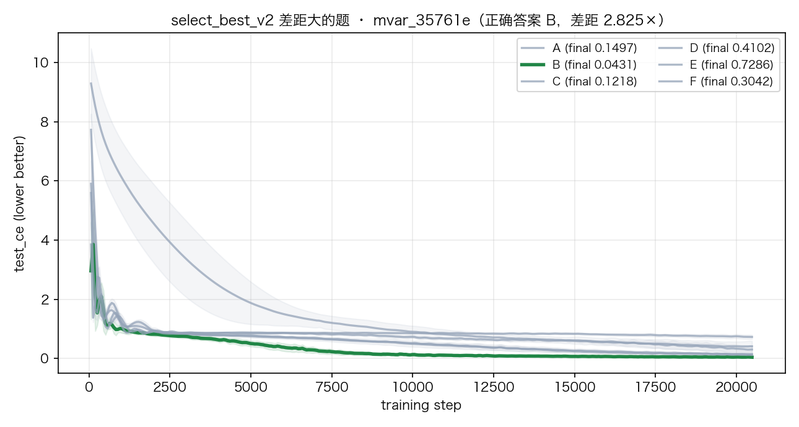

每个题集：题目构成 → 题目长什么样 → 怎么测 → 模型考了几分（n/m = %）。数据全部来自真实运行记录。
| 题集 | 题数 | 几选一 | 题面有没有参考/提示 | 任务 | 测过的模型 | 状态 |
|---|---|---|---|---|---|---|
| 旧 60 · 盲答 | 60 | 3 选 1 | 无 | 直接判断哪个配置最好 | 7 个 | 有效 |
| 旧 60 · 顺序反馈 | 60 | 3 选 1 | 无（答完揭晓对错） | 同上，可迭代作答 | 3 个 | 有效 |
| 旧 60 · hints 版 | 48 | 3 选 1 | 5 个参考（带实测 loss） | 参考校准后选最优 | luna | 有效 |
| select_best_v2 | 50（池 59） | 6 选 1 | 5 个参考（带 loss）+ 含 base | 选最优（含"不改"） | claude / terra / luna | 有效 |
| two_choice | 50 / 批 | 2 选 1 | 3 个参考（带 loss） | 比两个配置的 loss 大小 | deepseek / terra / claude / luna | 诊断用 |
| high_budget 13/15 | 13 或 15 | 4 选 1 | 无（盲答） | 直接判断哪个配置最好 | terra / deepseek / claude-sonnet-5 / gpt-5.4 | 有效 |
| propose_improvement | 50 / 批 | 开放（写 JSON 配置） | base + 5 个改进例子（带 loss） | 提出一个比 base 更好的配置 | deepseek | 主任务 |
| plan_light（L1） | 95 | 5 选 1 | 3 个已做过的实验（带 loss） | 先做哪个实验最划算 | luna | 有效 |
| propose_loop（L2） | 31 棵树 × 5 轮 | 开放（闭环） | 工作树 + 每轮结果 | K 轮实验逼近最优配置 | luna | pilot |
| demo 46 | 46 | 2 选 1 | 无 | 盲答选最优 | gpt-5.5（全量） | 有效 |
| XOR 100（任梓睿） | 100 | 2 选 1 | 无 | 盲答选最优 | gpt-5.5（全量） | prior 冲突 |
| GRU 100（唐晨成） | 100 | 2 选 1 | 无 | 盲答选最优 | gpt-5.5（全量） | 噪声题 |
| meta-model（Full-30） | — | 3 选 1（模型预测） | dataset 特征 | 预测哪个配置赢 | ExtraTrees / XGBoost | 有效 |
| 词 | 大白话 |
|---|---|
| 题集 | 一批题目，共用一个出题方式和评测协议。 |
| 题目 | 一个数据集 + 几个候选配置，问"哪个配置训练效果最好"。 |
| 选项 / 候选 | 一个完整的训练配置 = 用什么模型 + 什么优化器 + 训练多少数据。 |
| 参考（hints） | 题面里附带的"配置 + 它实测的 loss"，相当于带答案的小例子，用来校准判断。 |
| base | 一个基础配置。有些题目选项里包含"不改，就用 base"。 |
| loss | 训练完的误差值，越低越好。 |
| 随机基线 | 完全瞎猜能蒙对的概率（如 3 选 1 = 33.3%）。分数要高于它才有意义。 |
| 预算 | 训练步数 × 每步样本数（一个配置一共看多少数据）。 |
| GT（标准答案） | 真实跑训练代码得到的 loss，不是模型猜的。题目答案以 GT 为准。 |
| gap | 第一名和第二名的差距（比值）。差距太小 = 谁赢基本靠运气。 |
| 职能 | 具体做了什么 |
|---|---|
| 评测落地 | 批量并发评测脚本（50 题并发、多题集并行）；统一读 relay eval key；不设 token 上限、默认高推理强度；每次评测独立文件夹，完整保存模型思考过程。 |
| 控制实验 | 字母交换实验（检测"只看位置不看内容"）、强制推理对照、参考有效性（kNN oracle）分析、gap 分层检验。 |
| 根因修复 | 定位并修复 select_best 答案键 bug（旧分数作废重建 v2）；修复加粗答案解析、被覆盖的 base 存储、candidate_id 哈希不一致。 |
| 代码库维护 | 合并 origin/main 保持分支同步；修复基线正确性 bug；1403 个测试全部通过（2026-08-03 实测）。 |
| 存储重构 | 设计并实现列式存储（backend/data/：problems / trainers / candidates / results）+ 迁移工具，存量数据已迁移。 |
| 文档 | 维护 AGENTS.md / eval-sets.md / STATUS_AND_PLAN.md；登记 7-31 Weekly 飞书文档；生成本总览。 |
构成：3 个数据集 × 20 题 = 60 题。
| 数据集 | 是什么 | 题数 |
|---|---|---|
sym_62678b（一元回归） | x 是 1 个数，y 是一个带符号的表达式 | 20 |
mvar_c59a30（多元回归） | x 是 5 维向量，y 是固定符号表达式 | 20 |
bg_0021c1（玩具语言模型） | 词表 32、序列长 16，预测下一个词 | 20 |
给你一个数据集 + 3 个配置（A/B/C），三个配置用同一份数据训练。不看训练结果，用架构和优化器知识判断：哪个配置的测试误差最低？
| 选项 | 模型 | 优化器 | 预算 |
|---|---|---|---|
| A | MLP 2 层 / 256 宽 | Adam lr=1e-3 | 5120 样本 |
| B | MLP 4 层 / 32 宽 | SGD lr=1e-2 | 5120 样本 |
| C | MLP 1 层 / 128 宽 | AdamW lr=3e-4 | 5120 样本 |
| 模型 | 正确率 | 备注 |
|---|---|---|
| gemini-3.5-flash-thinking | 48.3% | 最高 |
| gpt-5 | 46.7% | |
| gpt-5.5 | 46.7% | |
| claude-opus-4-8 | 40.0% | |
| claude-sonnet-5 | 40.0% | |
| o3 | 35.0% | |
| gemini-2.5-pro | 23.3% | 最低 |
| 人类（唐晨成） | 70.0% | 上界参考 |
| 只按"参数量最大"猜 | 66.7% | 启发式上界 |
结论：模型间跨度 25pp，能区分模型；但"选参数量最大的"就能拿 66.7%，说明题面有捷径。
| 模型 | 正确率 | 备注 |
|---|---|---|
| GPT-5.5 | 79.7% | 三个模型打平，无区分度 |
| GPT-5.4 | 78.3% | |
| GPT-5.6-SOL | 78.3% |
结论：有反馈后所有人都能到 ~78-80%，失去区分度。
数据集 + 5 个参考配置（每个附实测 loss），3 个选项。例如参考里有：
| 参考 | 配置 | 实测 loss |
|---|---|---|
| 1 | transformer 1 层 / 64 宽，RMSprop | 3.448 |
| 2 | transformer 1 层 / 128 宽，RMSprop | 3.188 |
| 3 | transformer 3 层 / 128 宽，RMSprop | 3.386 |
| 4 | transformer 2 层 / 64 宽，SGD lr=1e-2 | 3.569 |
| 5 | transformer 1 层 / 32 宽，RMSprop | 3.479 |
问：选项 A/B/C 里哪个 loss 最低？选项 loss 不展示。
| 模型 | 正确率 | 排名分（0–2） | 前二命中 |
|---|---|---|---|
| gpt-5.6-luna | 33/48 = 68.8% | 1.56 / 2（78.1%） | 87.5% |
| 分层 | 正确率 | 分数据集 | 正确率 |
|---|---|---|---|
| 差距大（ratio ≥ 2） | 16/18 = 88.9% | 一元回归 | 15/18 = 83.3% |
| 差距中等（1.15–2） | 10/17 = 58.8% | 多元回归 | 11/17 = 64.7% |
| 差距小（< 1.15） | 7/13 = 53.8% | 玩具语言模型 | 7/13 = 53.8% |
结论：给参考后，最便宜的模型（luna）达到人类盲答水平（68.8% vs 70%）；差距越大的题越好做。
同一道题里所有选项都在同一份数据上训练；下图是真实 GT 曲线（10 次重复训练的均值 ± 波动，绿线 = 正确答案）。

来源：backend/data/results/bg_0021c1/*/curves.npz + summary.json（10 seeds）
数据集 + 5 个参考配置（带实测 loss）+ 6 个选项 A–F，其中一个是"不改"（base）。
| 参考 | 配置 | 实测 loss |
|---|---|---|
| 1 | transformer 1 层 / 128 宽，SGD lr=3e-4 | 3.627 |
| 2 | transformer 1 层 / 128 宽，RMSprop lr=3e-4 | 3.188 |
| … | 共 5 个，loss 在 3.19–3.63 | … |
| 选项 | 模型 | 优化器 | 是 base？ |
|---|---|---|---|
| A | transformer 2 层 / 128 宽 / 2 头 | SGD lr=1e-4, wd=0, mom=0.9 | 否 |
| D（正确答案） | transformer 2 层 / 128 宽 / 2 头 | Adagrad lr=3e-3, wd=1e-3 | 否 |
| E | transformer 2 层 / 128 宽 / 4 头 | SGD lr=3e-3, mom=0.9 | 是 |
| F | transformer 3 层 / 32 宽 | SGD lr=3e-3 | 否 |
所有选项预算相同（80 步 × 64 = 5120 样本）。问：哪个 loss 最低？答一个字母。
| 模型 | 正确率 | 排名分（0–5） | 备注 |
|---|---|---|---|
| claude-opus-5 | 34/50 = 68% | 4.40（88%） | top2 80% / top3 94% |
| gpt-5.6-terra | 35/50 = 70% | 4.44（88.8%） | |
| gpt-5.6-luna | 37/50 = 74% | 4.60（92%） | 最便宜的反而最高 |
| luna 分层（50 题） | 差距小 (<1.15) | 差距中 (1.15–2) | 差距大 (≥2) |
|---|---|---|---|
| 正确率 | 2/5 = 40% | 22/27 = 81.5% | 13/18 = 72.2% |


来源：backend/data/results/bg_0021c1/*/curves.npz（10 seeds）
| 模型 | v1.2 坏键分数 | 原因 |
|---|---|---|
| claude-opus-5 | 9/50 = 18% | 出题代码 shuffle 后仍用旧下标取 winner，答案键 ≈ 随机标注（47/59 错）。修复重建 v2。 |
| gpt-5.6-terra | 10/50 = 20% |
3 个参考（带 loss）：MLP 5 层/128 宽 Adam → 0.086；MLP 4 层/16 宽 Adam → 0.651；MLP 1 层/16 宽 Adam → 0.784。
| 选项 | 配置 |
|---|---|
| A（正确答案） | MLP 2 层 / 128 宽，LayerNorm，relu+gelu，Adam lr=1e-3 |
| B | MLP 5 层 / 128 宽，无 LayerNorm，silu+gelu 交替，Adam lr=1e-3 |
问：A 和 B 谁的 loss 更低？答一个字母。
| 模型 | range 参考 | config_near 参考 | local 参考（新） |
|---|---|---|---|
| gpt-5.6-terra | 38/50 = 76% | 31/50 = 62% | 35/50 = 70% |
| claude-opus-5 | — | — | 36/50 = 72% |
| gpt-5.6-luna | — | — | 37/50 = 74% |
| deepseek-v4-flash | 27/50 = 54%（seed1） 26/50 = 52%（seed2） | 21/50 = 42% | — |
结论：二选一能区分模型（terra 76% vs deepseek 伪随机 52–54%），但题目本身有天花板（各模型挤在 70–76%）。
数据集 + 4 个配置，全部是 MLP 2 层 / 256 宽，只差优化器。盲答，无参考。
| 选项 | 变化轴 |
|---|---|
| A（正确答案） | 优化器不同（lr / weight decay / momentum 组合不同） |
| B–D | 同上，4 选 1 |
预算为大预算（40960–81920 样本，是旧主集的 2–20 倍）。
| 模型 | 正确率 | 备注 |
|---|---|---|
| gpt-5.6-terra | 7/13 = 53.8% | |
| deepseek-v4-pro | 3/13 = 23.1% | ≈ 随机 |
| claude-sonnet-5 | 1/13 = 7.7% | 低于随机 —— 触发字母交换检查 |
| deepseek-v4-pro（预算 15 题） | 5/15 = 33.3% | 同题 GPT-5.4 盲答 20% / 顺序 46.7% |
| 字母交换控制 | 原顺序 | 交换 A/B 后 | 按内容选同一候选的比例 |
|---|---|---|---|
| claude-sonnet-5 | 2/13 = 15.4% | 2/13 = 15.4% | 46%（一半时候跟内容走） |
| gpt-5.6-terra | 5/13 = 38.5% | 3/13 = 23.1% | 38.5%（更多时候跟位置走） |
结论：这组题分数受"位置 vs 内容"混合策略影响，先审计答案键和位置偏置，再谈模型能力。
给：1 个数据集 + base 配置（带 loss）+ 5 个改进例子（带 loss）。
要求：输出一个新的 JSON 配置，期望训练后 loss 比 base 低。参数量 ≤ 例子中最大配置 × 1.1，预算 = base 的预算。
评分：真实训练你给的配置，和 base 逐次对比涨 / 跌 / 平（GT 全新运行，不猜）。
| 模型 | 击败 base 的比例 | 备注 |
|---|---|---|
| deepseek-v4-flash（v1.1） | 48/50 = 96% | 中位改善 1.33×，45/50 题跨 10 次训练稳定 |
| deepseek-v4-flash（v1） | 43/49 = 88% | 中位改善 1.32×，39/49 稳定 |
结论：目前信号最强的任务 —— 即使只会"抄参考里最优配置"也能赢，说明任务对 LLM 友好、可度量。
给一棵"实验树"：1 个 base + 几个候选配置，其中 3 个已做过实验（loss 已知），5 个没做过。
| 选项 | 真实 loss（评测时不给） |
|---|---|
| A（正确答案） | 3.268 |
| B | 3.315 |
| C | 3.345 |
| D | 3.409 |
| E | 3.277 |
问：5 个没做过的实验，先做哪个最可能找到最低 loss？
| 模型 | 选中最优实验 | 随机基线 | 完整排序 |
|---|---|---|---|
| gpt-5.6-luna | 48/95 = 50.5% | ~18% | Spearman ≈ 0（只挑得出最优，排不出中间序） |
结论：模型能可靠挑出"最值得先做"的实验，支持"选项少、只问最优"的题型。
一棵树 = base + 若干候选（全部来自存量配置，有真实 GT）。每轮：
评分：最终找到的 loss 相对 base 提升多少；是否击败树内已知最优。
| 指标 | 值 |
|---|---|
| 相对 base 的 loss 提升（mean / median / max） | 25.7% / 24.4% / 86.8% |
| 击败树内初始最优（oracle） | 16/31 = 51.6% |
| 新跑的真实实验 | 92 次（0 失败） |
| 浪费轮次（重复提已做过的配置） | 56/204 |
结论：闭环跑通，模型半数能发现比已知最优更好的配置；主要浪费在重复 propose。
同一协议对比三批题：gpt-5.5，全量 246 题（demo 46 + XOR 100 + GRU 100），2 选 1 盲答，随机基线 50%。
2026-08-03 全量跑（50 并发，llm_runs/batch3_full_20260803_gpt-5.5）。
| 批次 | 作者 | 题包 | gpt-5.5 全量正确率 | 15 题样本（旧） | 题面特点 |
|---|---|---|---|---|---|
| demo 46 | 郭绍阳 | 前端 demo（46 题） | 35/46 = 76.1% | 11/15 = 73.3% | 全部 2 选 1（24 架构 / 10 优化器 / 12 混合） |
| GRU 100 | 唐晨成 | bigram_lm（50 transformer / 50 GRU） | 72/100 = 72.0% | 9/15 = 60.0% | 2 选 1，architecture_only |
| XOR 100 | 任梓睿 | 合成表格分类（30 MLP / 70 KAN） | 35/100 = 35.0% | 7/15 = 46.7% | 2 选 1，architecture_only |
数据集：合成表格二分类（xor 规则，8 维输入，标签有噪声）。两个选项用同一份数据训练，预算相同。
| 选项 | 配置 | 参数量 |
|---|---|---|
| A | MLP 1 层 / 宽 16，relu，无残差，AdamW lr=3e-4 | 450 |
| B（正确答案） | MLP 6 层 / 宽 64，有残差，AdamW lr=3e-4 | 26050 |
问：哪个测试指标更好？
数据集：合成表格二分类，规则 s(x) = −x₀·x₁（xor），标签噪声 ε~N(0, 0.05²)。
| 选项 | 配置 |
|---|---|
| A（正确答案） | spline KAN，2 层 / 宽 8，grid 7 |
| B | MLP，6 层 |
问：哪个测试误差（CE）更低？
数据集：玩具语言模型（词表 32，序列长 16）。
| 选项 | 配置 |
|---|---|
| A（正确答案） | GRU 2 层 / d=36，残差，Adam |
| B | transformer，d_model=32 |
问：哪个测试误差（CE）更低？
| 第一名 vs 第二名差距 | gpt-5.5 正确率 | 解读 |
|---|---|---|
| gap < 0.05 | 39/100 = 39.0% | 差距在噪声内，接近瞎猜 |
| gap 0.05 – 0.075 | 12/22 = 54.5% | 略高于随机 |
| gap 0.075 – 0.10 | 13/20 = 65.0% | 开始有信号 |
| gap ≥ 0.10 | 43/56 = 76.8% | 信号最强 |
| 阈值切分 | gap 以下 | gap 以上 |
|---|---|---|
| 0.075 | 51/122 = 41.8% | 56/76 = 73.7% |
| 0.10 | 64/142 = 45.1% | 43/56 = 76.8% |
| 包 | 答案键 = GT | 差距中位数 | 差距过小(<1.05) | 参数量跨度中位 | winner=参数量最大 |
|---|---|---|---|---|---|
| XOR 100 | 100/100 | 1.19 | 0% | 2.12× | 52% |
| GRU 100 | 100/100 | 1.017 | 95% | 3.61× | 78% |
GT 打乱验证（排除顺序泄露）：GT 正确答案落在 A 的比例 —— GRU 48/100、XOR 43/100、demo 20/46， 二项检验均不显著（≈50%），字母确实打乱了；gpt-5.5 的答 A 比例 41–59%，没有 deepseek 那种"永远选第一个"的塌缩。 另外 31/32（GRU）、37/41（XOR）个候选在不同题里既当过 A 也当过 B。
The task is strictly first-order Markov: the optimal prediction depends only on the current token, not position or longer history.
Choice A has a stronger inductive bias for this setting: it has no positional embeddings and retains a direct token-embedding-to-head path through the residual GRU stack, making it easier to learn a shared token-to-next-token distribution. Choice B's transformer adds positional embeddings and attention machinery that are unnecessary here and can reduce sample efficiency or encourage position/history-specific fitting.
<answer>A</answer>题目是 GRU 100 包里的 q_781f46；模型不只给了字母，还给了可读的推理链。评测时完整思考过程一律落盘
（llm_runs/batch3_20260802T143340Z_gpt-5.5/results/gru_q_781f46.json）。
curves.npz）需要对应数据集在本机物化后才有；
当前文档示例用 select_best_v2 / 旧 60 的候选曲线展示（同一套 GT 存储）。
目标（论文第三 section，暂缓实现）：用元模型预测"哪个配置赢"，与 LLM 评测互为对照。 已完成的 Full-30 实验：宏平均显著三选一正确率，随机基线 33.33%。
| 模型 | 正确率 | 设置 |
|---|---|---|
| 共享回归 ExtraTrees（最优） | 82.11% | 1 个模型 / 9000 行 / 122 维特征 / 300 棵深度 16 树，预测 log(mean_loss) |
| per-dataset XGBoost（baseline） | 78.33% | 15 个数据集各训 1 个模型 / 600 行 |
| per-dataset GB 分类 | 74.85% | 两两比较 + 投票 |
| 旧报告（作废） | 63.50% | 旧指标含 42% 不显著噪声三元组，低估约 9pp |
结论：共享样本 + 回归到 log(mean_loss) 是当前最优配方；元模型比 LLM 更直接地编码"跨数据集的配置先验"。
| 结论 | 证据 | 建议行动 |
|---|---|---|
| gap 与正确率单调相关（出题门槛） | 全量 198 题分层：39% → 54.5% → 65% → 76.8%；阈值 0.075 上下差 32pp | 出题端按 gap 分层过滤，优先保留 gap ≥ 0.075–0.10 的题 |
| 好 base + 邻近扰动 + hints 的题最合理 | opus 事后评审 old60 全部 4 分（最高）；hints 版 luna 68.8% ≈ 人类盲答 70% | 以"旧 60 风格"为出题模板 |
| 选择题有天花板，生成式任务区分度好 | 6 选 1 / 2 选 1 各模型挤在 66–76%（最便宜的 luna 最高）；propose 96% / 88% 击败 base | 选择题作诊断，propose / 工作树作主指标 |
| 1.1× 对齐未落库 | select_best_v2 66% 的题 winner=参数量最大（中位跨度 163×） | 按预算规则重新出题；propose 评分已实现该约束 |
| 答案键 / 位置偏置必须先审计 | select_best v1.x 47/59 答案键错；deepseek 50/50 答 A 是伪分 | 答案键与 summary 一致性检查 + 交换顺序一致性检查进 CI |
| 同事题包需要修 | GRU 95% tight 噪声；XOR 被 KAN/参数量 prior 泄露 | 按 gap + 1.1× + 轴均衡重出 |
| 模型能"挑最优"但"排不出中间序" | plan_light 选最优 50.5% vs 随机 18%，Spearman ≈ 0 | 题型只问最优 / 二选一，不问排序 |
| 题集 | 几选一 | gpt-5.6-luna | gpt-5.6-terra | claude-opus-5 | deepseek-v4-flash/pro | 备注 |
|---|---|---|---|---|---|---|
| 旧 60 盲答 | 3 | — | — | 40%（sonnet-5） | — | opus-4-8 也 40%，人类 70% |
| 旧 60 · hints 版 | 3 | 33/48 = 68.8% | — | — | — | 随机 33.3% |
| select_best_v2 | 6 | 37/50 = 74% | 35/50 = 70% | 34/50 = 68% | — | 随机 16.7%；rank 分 88–92% |
| two_choice（local） | 2 | 37/50 = 74% | 35/50 = 70% | 36/50 = 72% | 54%/52%（伪分，永远答 A） | 随机 50% |
| high_budget 13 | 4 | — | 7/13 = 53.8% | 1/13 = 7.7%（sonnet-5） | 3/13 = 23.1% | 随机 25% |
| propose_improvement | 开放 | — | — | — | 48/50 = 96%（v1.1） | 击败 base 的比例，GT 新跑 |
| plan_light（L1） | 5 | 48/95 = 50.5% | — | — | — | 随机 ~18% |
claude-opus-5 与 claude-sonnet-5 是不同的模型，表中已标注。横评结论：选择题各模型挤在 66–76%（天花板），生成式任务区分度更好。
| 数据 | 文件 |
|---|---|
| 旧 60 盲答 / 顺序 | docs/0710_gpteval.html、artifacts/quiz_attempt_60/fair_sequential_v2/aggregate.json |
| 旧 60 hints 版（luna 33/48） | artifacts/eval_runs/run_luna_old60_20260801/results/gpt-5.6-luna/summary_select_best_old60.json |
| select_best_v2 / 坏键 | backend/eval/sets/select_best_v2/questions.jsonl、artifacts/eval_runs/run_luna_20260801/、docs/eval-sets.md §8–10 |
| two_choice（含 deepseek 塌缩） | artifacts/eval_probe_local/items/、docs/eval-sets.md §5.1–5.3 |
| high_budget 13/15 + 字母交换 | llm_runs/vapi_*_high_budget13_zero_shot/、llm_runs/control_letterswap_20260802/ |
| propose_improvement | backend/eval/sets/propose_improvement_v1.1/questions.jsonl、docs/eval-sets.md §5.1 |
| plan_light / propose_loop | backend/eval/sets/plan_light_v1/、docs/reports/AUTORESEARCH_PILOT_2026-08-02.md |
| 三批对比 + gap 分层 | llm_runs/batch3_full_20260803_gpt-5.5/（全量 246 题）、llm_runs/batch3_20260802T143340Z_gpt-5.5/（15 题样本）、tools/llm_eval/run_batch_compare.py |
| demo 46 / XOR / GRU 题包 | /tmp/aiq_demo_bake_backup.json、benchmark_releases/question_packs/ |
| meta-model | docs/0718_meta_model_final_report.html |
| 存储 / 架构 / 协议 | docs/backend-storage.md、AGENTS.md、~/.agents/relay.json（凭证不入库） |
所有数字均来自上述真实落盘文件；本页为 2026-08-03 快照。测试：pytest -q → 1403 passed。
# 0. 凭证：~/.agents/relay.json 的 eval 段（base_url + api_key），评测一律用 eval key
# 1. 生成题集（选择题 / config 修改题）
.venv/bin/python -m backend.eval.questions --type select_best --items-per-problem 5 --set-name select_best_v2 --seed 20260804
.venv/bin/python -m backend.eval.questions --type propose_improvement --items-per-problem 5 --set-name propose_improvement_v1
# 2. 批量并发评测（50 并发；不设 token 上限；默认 reasoning_effort=high）
.venv/bin/python -m backend.eval.batch_eval --set select_best_v2 --model gpt-5.6-luna --run-dir artifacts/eval_runs/run_luna_20260801
.venv/bin/python -m backend.eval.batch_propose --set propose_improvement_v1.1 --model deepseek-chat
# 3. 三批对比（demo / XOR / GRU 全量）
.venv/bin/python tools/llm_eval/run_batch_compare.py --model gpt-5.5 --per-batch 1000 --seed 20260802 --workers 50
# 4. 打分 / 报告（含思考过程 HTML）
.venv/bin/python -m backend.eval.ranking --responses <responses.jsonl> --set <set> # 离线重打分（rank 计分）
.venv/bin/python -m backend.eval.report_html --run-dir <run_dir> # 生成报告 html
# 5. 测试
.venv/bin/python -m pytest -q # 1403 passed